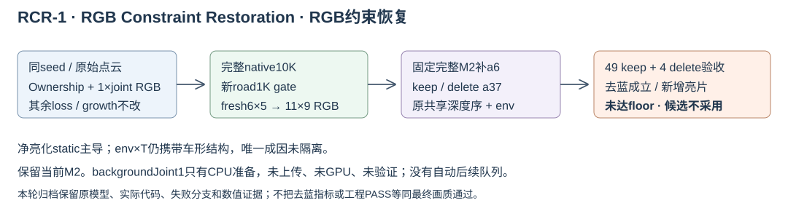

RCR-1：实际源码与研究归档
交互验收 · 完整机制报告 · README · 运行清单 · 失败卡 · 下载实际源码包
去蓝成立，新增亮片未达floor；研究候选不采用，保留当前M2。26,609训练更新，正式54次线性求解；HELD9仅道路RGB校准target留出。大模型checkpoint仍在远端，本轻量源码包不是完整模型备份。backgroundJoint1未上传、未GPU、未验证，无自动队列。

证据
实际执行源码与依赖快照
逐文件来源/大小清单。executed快照为各段实际代码；engine为依赖源码快照，不声称每个模块均执行。
actual_diagnostic_or_road_runner (16)
actual_finalizer_snapshot (16)
actual_finalizer_worker (11)
actual_road_raster_helper (1)
candidate_native (30)
candidate_road (11)
engine_dependency_snapshot_not_all_modules_executed (147)
failed_color_postfit (19)
failed_postfit_receipt (9)
growth_counterfactual (56)
native_executed_snapshot (132)
native_run_metadata (93)
original_ownership (24)
reference_M2_runtime (21)
reference_road (11)
unchanged_fixed_M2 (1)
未执行备选
backgroundJoint1 CPU准备说明 · 未运行状态合同